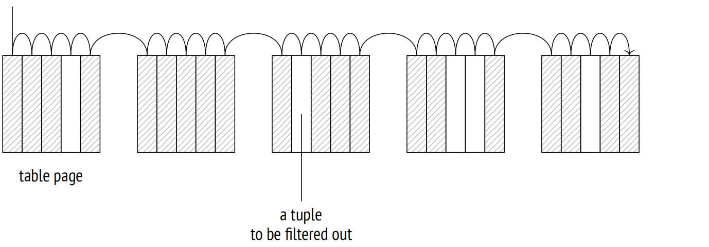
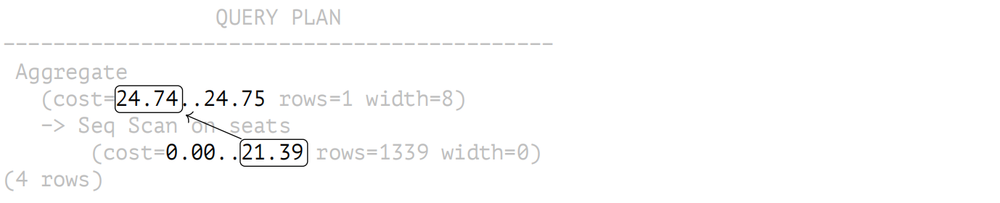
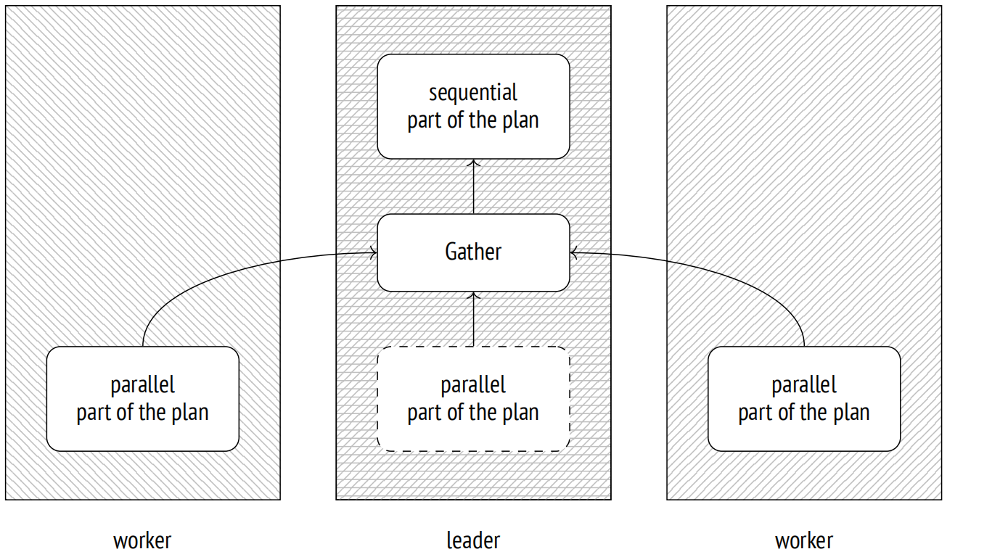
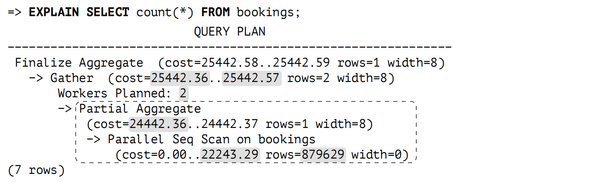
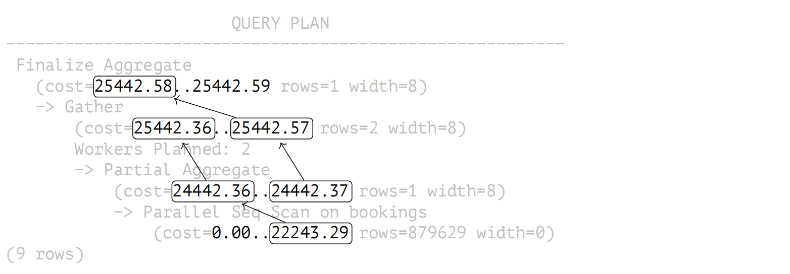
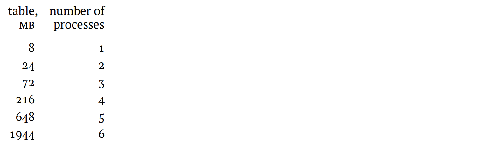
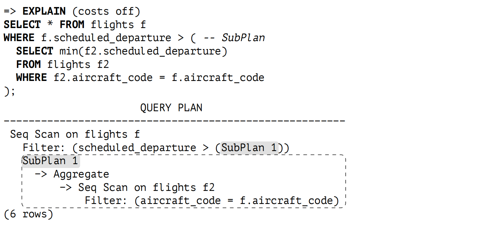
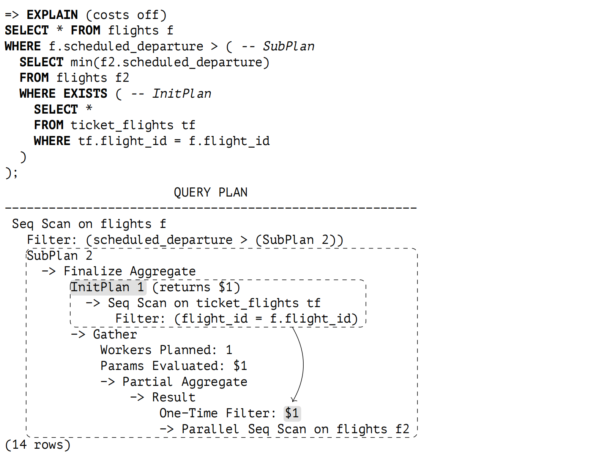

第 18 章：表访问方法
18.1 可插拔存储引擎
PostgreSQL 使用的数据布局既不是唯一可能的，也不是所有负载类型的最佳选择。遵循可扩展性的理念，PostgreSQL 允许创建和新增表访问方法 (可插拔存储引擎)，但目前仅有一种开箱即用的引擎：
=> SELECT amname, amhandler FROM pg_am WHERE amtype = 't';
amname | amhandler
−−−−−−−−+−−−−−−−−−−−−−−−−−−−−−−
heap | heap_tableam_handler
(1 row)在建表时，你可以指定要使用的引擎 (CREATE TABLE … USING)；否则，将使用 default_table_access_method 参数中列出的默认引擎。
为了让 PostgreSQL 内核部分以相同的方式与不同的引擎协作，表访问方法必须实现一个特殊的接口。1 在 amhandler 列中指定的函数，其返回的接口结构 2 包含内核所需的所有信息。
以下核心组件可被所有表访问方法使用：
- 事务管理器，包括 ACID 和快照隔离支持
- 缓冲区管理
- I/O 子系统
- TOAST
- 优化器和执行器
- 索引支持
即使存储引擎并不使用这些组件中的所有部分，这些组件也始终可供引擎使用。
而引擎定义了：
- 元组格式和数据结构
- 表扫描的实现和成本预估
- 插入、删除、更新和锁操作的实现
- 可见性规则
- 清理和分析过程
从历史上看，PostgreSQL 使用了一个单一的内置数据存储，而没有任何适当的编程接口，因此现在很难提出一个好的设计，既能考虑到标准引擎的所有特点，又不干扰其他方法。
比如，目前仍不清楚如何处理 WAL。新的访问方法可能需要记录自己的操作，而内核并不知道这些操作。现有的通用 WAL 机制 3 通常是一个糟糕的选择，因为它会产生过多的开销。你可以添加另一个接口来处理新类型的 WAL 条目，但是这样一来，崩溃恢复将依赖于外部代码，这是非常不可取的。到目前为止，唯一看似可行的解决方案是为每个特定引擎修补内核。
因此，我没有严格区分表访问方法和内核。本书前面部分描述的许多功能从形式上讲属于堆访问方法，而不属于内核本身。这种方法很可能始终是 PostgreSQL 的最终标准引擎，而其他方法将填补各自的空白，以应对特定负载类型的挑战。
在目前正在开发的所有新引擎中，我想提及以下几种：
Zheap 旨在处理表膨胀 4。它实现了原地更新，并将与 MVCC 相关的历史数据移动到一个单独的回滚段中。这种引擎对于涉及频繁数据更新的负载将非常有用。
Zheap 的架构对于 Oracle 用户来说会感到很熟悉，尽管它确实有一些细微差别 (例如，索引访问方法的接口不允许使用其自己的版本创建索引)。
Zedstore 实现了列式存储 5，这种存储方式可能对 OLAP 查询最为高效。
存储的数据其结构是一棵元组 ID 的 B 树；每一列都存储在与主树相关的自己的 B 树中。未来，可能会在一个 B 树中存储多个列，从而获得混合存储。
18.2 顺序扫描
存储引擎定义了表数据的物理布局，并提供访问方法。唯一支持的方法是顺序扫描，它完整地读取表主分支的文件 (或多个文件)。每次页面读取，都会检查每条元组的可见性；那些不满足查询的元组会被过滤掉。
扫描进程会遍历缓冲区缓存；为了确保大表不会淘汰有用的数据，PostgreSQL 使用了一个小型的环形缓冲区。扫描同一张表的其他进程会加入到这个环形缓冲区，从而避免额外的磁盘读取；这种扫描被称为同步扫描。这样一来，扫描就不必总是从文件开头开始。
顺序扫描是读取整个表或其中大部分数据的最有效的方式。换句话说，当选择率较低时，顺序扫描带来的价值最大。(如果选择率高，意味着查询只需要选择几行，那么最好使用索引)。
18.2.1 成本估算
在查询的执行计划中，Seq Scan 节点表示顺序扫描：
=> EXPLAIN SELECT *
FROM flights;
QUERY PLAN
−−−−−−−−−−−−−−−−−−−−−−−−−−−−−−−−−−−−−−−−−−−−−−−−−−−−−−−−−−−−−−−−
Seq Scan on flights (cost=0.00..4772.67 rows=214867 width=63)
(1 row)预估的行数是作为基本统计信息的一部分提供的：
=> SELECT reltuples FROM pg_class WHERE relname = 'flights';
reltuples
−−−−−−−−−−−
214867
(1 row)在估算成本时，优化器会考虑以下两个组成部分：磁盘 IO 和 CPU 资源。6
I/O 成本的计算方法是将表中的页面数量乘以读取单个页面的成本 (假设页面是按顺序读取的)。当缓冲区管理器请求一个页面时，操作系统实际上从磁盘读取了更多的数据，所以后续的几个页面很可能在操作系统缓存中找到。因此，使用顺序扫描读取单个页面的成本 (规划器按 seq_page_cost 预估) 低于随机访问的成本 (由 random_page_cost 值定义)。
默认设置适用于 HDD；如果你使用的是 SSD，那么显著降低 random_page_cost 值是有意义的 (seq_page_cost 参数通常保持原样，作为参考值)。由于这些参数之间的最佳比例取决于硬件，因此通常在表空间级别设置 (ALTER TABLESPACE …SET)。
=> SELECT relpages,
current_setting('seq_page_cost') AS seq_page_cost,
relpages * current_setting('seq_page_cost')::real AS total
FROM pg_class WHERE relname = 'flights';
relpages | seq_page_cost | total
−−−−−−−−−−+−−−−−−−−−−−−−−−+−−−−−−−
2624 | 1 | 2624
(1 row)这些计算清楚地显示了不及时清理所导致的表膨胀的后果：表的主分支越大，需要扫描的页面就越多，无论包含多少活跃元组。
CPU 资源预估包括处理每个元组的成本 (规划器按 cpu_tuple_cost 预估)：
=> SELECT reltuples,
current_setting('cpu_tuple_cost') AS cpu_tuple_cost,
reltuples * current_setting('cpu_tuple_cost')::real AS total
FROM pg_class WHERE relname = 'flights';
reltuples | cpu_tuple_cost | total
−−−−−−−−−−−+−−−−−−−−−−−−−−−−+−−−−−−−−−
214867 | 0.01 | 2148.67
(1 row)这两个预估值的总和表示计划的总成本。启动成本为零，因为顺序扫描没有前置条件。
如果需要过滤扫描的表，应用的过滤条件会出现在 Seq Scan 节点的 Filter 部分。预估的行数取决于这些条件的选择率，而成本预估包括了相关的计算开销。
EXPLAIN ANALYZE 命令显示了实际返回的行数以及被过滤掉的行数：
=> EXPLAIN (analyze, timing off, summary off)
SELECT * FROM flights
WHERE status = 'Scheduled';
QUERY PLAN
−−−−−−−−−−−−−−−−−−−−−−−−−−−−−−−−−−−−−−−−−−−−−−−−
Seq Scan on flights
(cost=0.00..5309.84 rows=15383 width=63)
(actual rows=15383 loops=1)
Filter: ((status)::text = 'Scheduled'::text)
Rows Removed by Filter: 199484
(5 rows)让我们看一个更加复杂的执行计划，使用到了聚合：
=> EXPLAIN SELECT count(*) FROM seats;
QUERY PLAN
−−−−−−−−−−−−−−−−−−−−−−−−−−−−−−−−−−−−−−−−−−−−−−−−−−−−−−−−−−−−−−
Aggregate (cost=24.74..24.75 rows=1 width=8)
−> Seq Scan on seats (cost=0.00..21.39 rows=1339 width=0)
(2 rows)该计划由两个节点组成：上层节点 (Aggregate) 用于计算函数 count，从下层节点 (Seq Scan) 拉取数据，后者负责扫描表。
Aggregate 节点的启动成本包括聚合本身：在从下层节点获取所有行之前，不可能返回第一行 (在这个例子中只有一行)。聚合成本是根据每个输入行的条件操作的执行成本 (按 cpu_operator_cost 估算) 来估算的：7
=> SELECT reltuples,
current_setting('cpu_operator_cost') AS cpu_operator_cost,
round((
reltuples * current_setting('cpu_operator_cost')::real
)::numeric, 2) AS cpu_cost
FROM pg_class WHERE relname = 'seats';
reltuples | cpu_operator_cost | cpu_cost
−−−−−−−−−−−+−−−−−−−−−−−−−−−−−−−+−−−−−−−−−−
1339 | 0.0025 | 3.35
(1 row)计算出的估算值被添加到 Seq Scan 节点的总成本中。
Aggregate 节点的总成本还包括处理待返回行的成本，按 cpu_tuple_cost 估算：
=> WITH t(cpu_cost) AS (
SELECT round((
reltuples * current_setting('cpu_operator_cost')::real
)::numeric, 2)
FROM pg_class WHERE relname = 'seats'
)
SELECT 21.39 + t.cpu_cost AS startup_cost,
round((
21.39 + t.cpu_cost +
1 * current_setting('cpu_tuple_cost')::real
)::numeric, 2) AS total_cost
FROM t;
startup_cost | total_cost
−−−−−−−−−−−−−−+−−−−−−−−−−−−
24.74 | 24.75
(1 row)因此，成本估算的依赖关系如下图所示：
18.3 并行计划
PostgreSQL 支持并行查询。8 执行查询的领导者进程生成 (通过 postmaster) 多个工作进程，这些进程同时执行计划中相同的并行部分。结果会传递给领导者进程，领导者进程将它们汇总在 Gather 9 节点中。当不接收数据时，领导者进程也可以参与执行计划的并行部分。
如果需要，你可以通过关闭 parallel_leader_participation 参数来禁止领导者进程参与并行计划的执行。
当然，启动这些进程并在它们之间传递数据并不是没有成本的，因此到目前为止并不是所有的查询都应该并行化。
此外，即使允许并行执行，也并非计划的所有部分都可以同时处理。一些操作由领导者进程单独以顺序模式执行。
PostgreSQL 不支持另一种并行计划执行方式，即由多个工作进程执行数据处理，这些工作进程实际上形成了一条流水线 (粗略地说，每个计划节点都由一个单独的进程执行) ; PostgreSQL 开发人员认为这种机制效率低下。
18.4 并行顺序扫描
为并行处理设计的节点之一是 Parallel Seq Scan 节点，负责执行并行顺序扫描。
这个名字听起来有点矛盾 (扫描究竟是顺序的还是并行的？)，但无论如何，它反映了操作的本质。如果我们观察文件访问，会发现表页面是顺序读取的，遵循它们在简单顺序扫描中读取的顺序。然而，这个操作是由多个并发进程执行的。为了避免重复扫描同一个页面，执行器通过共享内存来同步这些进程。
此处有一个微妙的问题，操作系统无法获得典型的顺序扫描的全貌；相反，它看到的是多个执行随机读取的进程。因此，通常用于加速顺序扫描的数据预取几乎变得毫无用处。为了尽量减少这种不愉快的影响 ，PostgreSQL 为每个进程分配的不是一个页面，而是多个连续的页面进行读取。10
因此，并行扫描看起来并没有多大意义，因为通常的读取成本因进程间的数据传输开销而增加。然而，如果工作进程对获取的行进行了后续处理 (如聚合)，那么总执行时间可能会大大缩短。
18.4.1 成本估算
让我们看一个对大表执行聚合的查询。执行计划使用了并行：
所有位于 Gather 节点下方的节点都属于计划的并行部分。这些节点由各个工作进程执行 (这里规划了两个工作进程) ，可能也由领导者进程执行 (除非通过 parallel_leader_participation 参数将此功能关闭)。Gather 节点自身以及所有它上方的节点构成了计划的顺序部分，并仅由领导者进程执行。
Parallel Seq Scan 节点表示并行堆扫描。rows 字段显示了单个进程要处理的预估平均行数。总而言之，执行必须由三个进程 (一个领导者进程和两个工作进程) 来完成，但是领导者进程将处理较少的行：随着工作进程数量的增加，它工作比重会变小。11 在这个特定的例子中，因子是 2.4。
=> SELECT reltuples::numeric, round(reltuples / 2.4) AS per_process
FROM pg_class WHERE relname = 'bookings';
reltuples | per_process
−−−−−−−−−−−+−−−−−−−−−−−−−
2111110 | 879629
(1 row)Parallel Seq Scan 的成本计算方式类似于顺序扫描。计算出的值较小，因为每个进程处理的行数较少；I/O 部分是完整包含的，因为仍然需要逐页读取整个表。
=> SELECT round((
relpages * current_setting('seq_page_cost')::real +
reltuples / 2.4 * current_setting('cpu_tuple_cost')::real
)::numeric, 2)
FROM pg_class WHERE relname = 'bookings';
round
−−−−−−−−−−
22243.29
(1 row)接下来 Partial Aggregate 节点对获取到的数据进行聚合；在此例中，它用于计算行数。
聚合成本按往常方式进行估算，并添加到表扫描的成本中：
=> WITH t(startup_cost)
AS (
SELECT 22243.29 + round((
reltuples / 2.4 * current_setting('cpu_operator_cost')::real
)::numeric, 2)
FROM pg_class
WHERE relname = 'bookings'
)
SELECT startup_cost,
startup_cost + round((
1 * current_setting('cpu_tuple_cost')::real
)::numeric, 2) AS total_cost
FROM t;
startup_cost | total_cost
−−−−−−−−−−−−−−+−−−−−−−−−−−−
24442.36 | 24442.37
(1 row)下一个节点 (Gather) 由领导者进程执行。该节点负责启动工作进程并收集他们返回的数据。
在规划过程中，启动进程 (无论数量如何) 的成本估算由 parallel_setup_cost 参数定义，而进程之间每行数据传输的成本按 parallel_tutple_cos 进行估算。
在这个例子中，启动成本 (用于启动进程) 占大头；这个值被添加到 Partial Aggregate 节点的启动成本中。总成本还包括传输两行的成本；这个值被添加到 Partial Aggregate 节点 12 的总成本中：
=> SELECT
24442.36 + round(
current_setting('parallel_setup_cost')::numeric,
2) AS setup_cost,
24442.37 + round(
current_setting('parallel_setup_cost')::numeric +
2 * current_setting('parallel_tuple_cost')::numeric,
2) AS total_cost;
setup_cost | total_cost
−−−−−−−−−−−−+−−−−−−−−−−−−
25442.36 | 25442.57
(1 row)最后要说的是，Finalize Aggregate 节点负责聚合 Gather 节点从并行进程接收到的所有部分结果。
最后的聚合估算与其他任何聚合一样。启动成本基于聚合三行数据的成本；这个值被添加到 Gather 的总成本中 (因为需要所有行来计算结果)。Finalize Aggregate 的总成本还包括返回一行的成本。
=> WITH t(startup_cost) AS (
SELECT 25442.57 + round((
3 * current_setting('cpu_operator_cost')::real
)::numeric, 2)
FROM pg_class WHERE relname = 'bookings'
)
SELECT startup_cost,
startup_cost + round((
1 * current_setting('cpu_tuple_cost')::real
)::numeric, 2) AS total_cost
FROM t;
startup_cost | total_cost
−−−−−−−−−−−−−−+−−−−−−−−−−−−
25442.58 | 25442.59
(1 row)成本估算之间的依赖关系取决于节点是否需要在将结果传递给其父节点之前积累数据。聚合操作在获取所有输入行之前无法返回结果，因此其启动成本基于下层节点的总成本。相反，Gather 节点一旦获取到行就开始向上层节点发送，因此，该操作的启动成本取决于下层节点的启动成本，而它的总成本则基于下层节点的总成本。
以下是依赖关系图：
18.5 并行执行限制
18.5.1 后台工作进程数量
进程数量由三个参数层级控制。同时运行的后台工作进程的最大数量由 max_worker_processes 定义。
然而，并行查询执行并不是唯一需要后台工作进程的操作。例如，后台工作进程也参与逻辑复制以及被扩展使用。专门为并行计划执行所分配的进程数量受到 max_parallel_workers 的限制。
在此数字中，最多 max_parallel_workers_per_gather 个进程可以服务于一个领导者进程。
这些参数的选择取决于以下因素：
- 硬件能力：系统中必须有专门用于并行执行的空闲核心。
- 表的大小：数据库必须含有大表。
- 典型负载：必须有可能从并行执行中受益的查询。
这些标准通常适用于 OLAP 系统，而不是 OLTP 系统。
如果预估要读取的堆数据大小不超过 min_parallel_table_scan_size 值，那么规划器将根本不会考虑并行执行。
除非特定表在 parallel_workers 存储参数中明确指定了进程数量，否则将按照以下公式计算：
这意味着每当一个表增大三倍时，PostgreSQL 就会为它的处理分配一个额外的并行工作进程。默认设置可以得出以下数据：
无论如何，并行工作进程的数量都不能超过 max_parallel_workers_per_gather 参数定义的限制。
如果我们查询一个 19MB 的小表 ，那么只会计划并启动一个工作进程：
=> EXPLAIN (analyze, costs off, timing off, summary off)
SELECT count(*) FROM flights;
QUERY PLAN
−−−−−−−−−−−−−−−−−−−−−−−−−−−−−−−−−−−−−−−−−−−−−−−−−−−−−−−−−−−−−−−−−−−−−
Finalize Aggregate (actual rows=1 loops=1)
−> Gather (actual rows=2 loops=1)
Workers Planned: 1
Workers Launched: 1
−> Partial Aggregate (actual rows=1 loops=2)
−> Parallel Seq Scan on flights (actual rows=107434 lo...
(6 rows) 对 105 MB 大小的表进行查询，只会获得两个工作进程，因为达到了 max_parallel_workers_per_gather 工作进程数量的限制：
=> EXPLAIN (analyze, costs off, timing off, summary off)
SELECT count(*) FROM bookings;
QUERY PLAN
−−−−−−−−−−−−−−−−−−−−−−−−−−−−−−−−−−−−−−−−−−−−−−−−−−−−−−−−−−−−−−−−−−−−−
Finalize Aggregate (actual rows=1 loops=1)
−> Gather (actual rows=3 loops=1)
Workers Planned: 2
Workers Launched: 2
−> Partial Aggregate (actual rows=1 loops=3)
−> Parallel Seq Scan on bookings (actual rows=703703 l...
(6 rows)如果我们移除这个限制，那么我们将预估得到三个工作进程：
=> ALTER SYSTEM SET max_parallel_workers_per_gather = 4;
=> SELECT pg_reload_conf();
=> EXPLAIN (analyze, costs off, timing off, summary off)
SELECT count(*) FROM bookings;
QUERY PLAN
−−−−−−−−−−−−−−−−−−−−−−−−−−−−−−−−−−−−−−−−−−−−−−−−−−−−−−−−−−−−−−−−−−−−−
Finalize Aggregate (actual rows=1 loops=1)
−> Gather (actual rows=4 loops=1)
Workers Planned: 3
Workers Launched: 3
−> Partial Aggregate (actual rows=1 loops=4)
−> Parallel Seq Scan on bookings (actual rows=527778 l...
(6 rows)如果在查询执行期间可用的槽数量小于规划的值，那么只会启动可用数量的工作进程。
让我们将并行进程的总数限制为五个，并同时运行两个查询：
=> ALTER SYSTEM SET max_parallel_workers = 5;
=> SELECT pg_reload_conf();
=> EXPLAIN (analyze, costs off, timing off, summary off)
SELECT count(*) FROM bookings;=> EXPLAIN (analyze, costs off, timing off, summary off) SELECT count(*) FROM bookings; QUERY PLAN −−−−−−−−−−−−−−−−−−−−−−−−−−−−−−−−−−−−−−−−−−−−−−−−−−−−−−−−−−−−−−−−− Finalize Aggregate (actual rows=1 loops=1) −> Gather (actual rows=3 loops=1) Workers Planned: 3 Workers Launched: 2 −> Partial Aggregate (actual rows=1 loops=3) −> Parallel Seq Scan on bookings (actual rows=7037... (6 rows)
QUERY PLAN
−−−−−−−−−−−−−−−−−−−−−−−−−−−−−−−−−−−−−−−−−−−−−−−−−−−−−−−−−−−−−−−−−−−−−
Finalize Aggregate (actual rows=1 loops=1)
−> Gather (actual rows=4 loops=1)
Workers Planned: 3
Workers Launched: 3
−> Partial Aggregate (actual rows=1 loops=4)
−> Parallel Seq Scan on bookings (actual rows=527778 l...
(6 rows)尽管在这两种情况下都期望获得三个进程，但其中一个查询只获得了两个。
让我们恢复默认设置：
=> ALTER SYSTEM RESET ALL;
=> SELECT pg_reload_conf();18.5.2 无法并行化的查询
并非所有查询都可以并行化。13 特别地，以下类型的查询无法使用并行计划：
-
修改或锁定数据的查询 (UPDATE、DELETE、SELECT FOR UPDATE 等)。
此限制不适用于以下命令中的子查询：
— CREATE TABLE AS，SELECT INTO，CREATE MATERIALIZED VIEW
— REFRESH MATERIALIZED VIEW
但是，在所有这些情况下，行插入仍然是顺序执行的。
-
可以暂停的查询。这适用于游标内运行的查询，包括 PL/pgSQL 中的 FOR 循环。
-
调用 PARALLEL UNSAFE 函数的查询。默认情况下，这些都是用户定义的函数和一些标准函数。你可以通过查询系统表来获取完整 unsafe 函数的列表：SELECT * FROM pg_proc WHERE proparallel = ‘u’;
-
函数内的查询，如果这些函数是从一个并行查询中调用的 (为了避免工作进程数量的递归增长)。
在 PostgreSQL 的未来版本中可能会移除其中一些限制。例如，已经存在在可串行化隔离级别下并行化查询的能力。
使用诸如 INSERT 和 COPY 等命令并行插入行的方式目前正在开发中。14
出于以下几个原因，查询可能仍然无法并行化：
- 此类型的查询根本不支持并行。
- 服务器配置禁止使用并行计划 (例如，由于施加的表大小限制)。
- 并行计划比顺序计划的成本更高。
要检查查询是否可以并行化，你可以暂时打开 force_parallel_mode 参数。然后规划器将尽可能创建并行计划：
=> EXPLAIN SELECT * FROM flights;
QUERY PLAN
−−−−−−−−−−−−−−−−−−−−−−−−−−−−−−−−−−−−−−−−−−−−−−−−−−−−−−−−−−−−−−−−
Seq Scan on flights (cost=0.00..4772.67 rows=214867 width=63)
(1 row)
=> SET force_parallel_mode = on;
=> EXPLAIN SELECT * FROM flights;
QUERY PLAN
−−−−−−−−−−−−−−−−−−−−−−−−−−−−−−−−−−−−−−−−−−−−−−−−−−−−−−−−−−−−−−−−−−−−−
Gather (cost=1000.00..27259.37 rows=214867 width=63)
Workers Planned: 1
Single Copy: true
−> Seq Scan on flights (cost=0.00..4772.67 rows=214867 width=63)
(4 rows)18.5.3 并行限制的查询
计划中的并行部分越大，潜在的性能提升就越多。然而，某些操作仅由领导者进程严格顺序执行 15，即使它们本身并不干扰并行化。换句话说，这些操作不能出现在 Gather 节点下方的计划树中。
不可扩展的子查询。不可扩展子查询的一个最明显例子 16 是扫描一个 CTE 结果 (在计划中由 CTE Scan 节点表示)：
=> EXPLAIN (costs off)
WITH t AS MATERIALIZED (
SELECT * FROM flights
)
SELECT count(*) FROM t;
QUERY PLAN
−−−−−−−−−−−−−−−−−−−−−−−−−−−−
Aggregate
CTE t
−> Seq Scan on flights
−> CTE Scan on t
(4 rows)如果 CTE 没有被物化，那么计划中就不会包含 CTE Scan 节点，因此这个限制就不适用。
但是请注意，如果以并行模式计算 CTE 的成本更低，CTE 本身可以在并行模式下进行计算。
=> EXPLAIN (costs off)
WITH t AS MATERIALIZED (
SELECT count(*) FROM flights
)
SELECT * FROM t;
QUERY PLAN
−−−−−−−−−−−−−−−−−−−−−−−−−−−−−−−−−−−−−−−−−−−−−−−−−
CTE Scan on t
CTE t
−> Finalize Aggregate
−> Gather
Workers Planned: 1
−> Partial Aggregate
−> Parallel Seq Scan on flights
(7 rows)另一个不可扩展子查询的示例如下图中的 SubPlan 节点所示：
前两行表示主查询的计划：顺序扫描 flights 表，并根据提供的过滤条件检查每一行。过滤条件包含一个子查询；这个子查询的计划从第三行开始。因此，SubPlan 节点在这种情况下会被多次执行，每次顺序扫描获取一行数据时执行一次。
此计划上层的 Seq Scan 节点不能参与并行执行，因为它依赖于 SubPlan 节点返回的数据。
最后要提及的是，这里还有一个由 InitPlan 节点表示的不可扩展子查询：
不同于 SubPlan 节点，InitPlan 仅评估一次 (在此例中，每次执行 SubPlan 2 节点时评估一次)。
InitPlan 的父节点不能参与并行执行 (但是那些接收 InitPlan 评估结果的节点可以，就像在这个例子中一样)。
临时表。临时表不支持并行扫描，因为临时表只能由创建它们的进程独占式访问。临时表的页面在本地缓冲区缓存中处理。要使本地缓存能够被多个进程访问，将需要像在共享缓存中那样的锁定机制，这会使它的其他好处变得不那么明显。
=> CREATE TEMPORARY TABLE flights_tmp AS SELECT * FROM flights;
=> EXPLAIN (costs off)
SELECT count(*) FROM flights_tmp;
QUERY PLAN
−−−−−−−−−−−−−−−−−−−−−−−−−−−−−−
Aggregate
−> Seq Scan on flights_tmp
(2 rows)并行限制函数。定义为 PARALLEL RESTRICTED 的函数仅允许出现在计划的顺序部分中。你可以通过运行以下查询从系统表中获取此类函数的列表：
SELECT * FROM pg_proc WHERE proparallel = 'r';只有在完全了解所有相关影响，并已经仔细研究了所有施加的限制后，才能将函数标记为 PARALLEL RESTRICTED (更不用说 PARALLEL SAFE)。17
-
postgresql.org/docs/14/tableam.html ↩︎
-
include/access/tableam.h ↩︎
-
postgresql.org/docs/14/generic-wal.html ↩︎
-
github.com/EnterpriseDB/zheap ↩︎
-
github.com/greenplum-db/postgres/tree/zedstore ↩︎
-
backend/optimizer/path/costsize.c, cost_seqscan function ↩︎
-
backend/optimizer/path/costsize.c, cost_agg function ↩︎
-
postgresql.org/docs/14/parallel-query.html
backend/access/transam/README.parallel ↩︎ -
backend/executor/nodeGather.c ↩︎
-
backend/access/heap/heapam.c, table_block_parallelscan_startblock_init & table_block_parallelscan_nextpage functions ↩︎
-
backend/optimizer/path/costsize.c, get_parallel_divisor function ↩︎
-
backend/optimizer/path/costsize.c, cost_gather function ↩︎
-
postgresql.org/docs/14/when-can-parallel-query-be-used.html ↩︎
-
commitfest.postgresql.org/32/2844
commitfest.postgresql.org/32/2841
commitfest.postgresql.org/32/2610 ↩︎ -
postgresql.org/docs/14/parallel-safety.html ↩︎
-
backend/optimizer/plan/subselect.c ↩︎
-
postgresql.org/docs/14/parallel-safety#PARALLEL-LABELING.html ↩︎